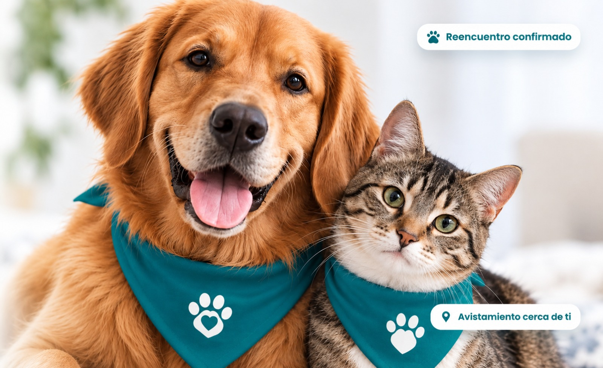
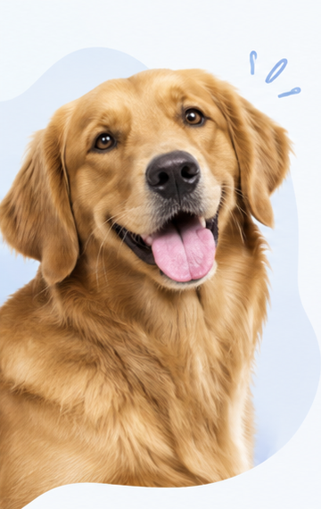
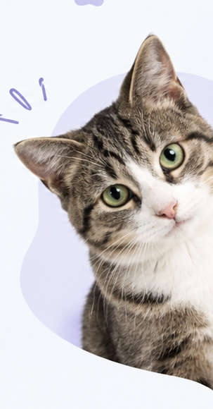

Sube una foto y te ayudamos a reencontrarla con su familia, usando búsqueda inteligente en lugar de carteles pegados en postes.
Buscaremos coincidencias cerca de ti.

mascotas perdidas nunca regresan a casa, porque la información sobre ellas queda dispersa en grupos de redes sociales y carteles físicos que pocas personas ven a tiempo.
Cada reporte vive en un grupo distinto de Facebook o WhatsApp, sin un lugar central donde buscar.
Comparar fotos y descripciones a mano toma horas que, en una emergencia, valen mucho.
Alguien ve a la mascota pero no sabe cómo avisar a la familia correcta ni a tiempo.


PetAlert IA guía a cada familia desde el registro de su mascota hasta el contacto con quien la encontró, comparando automáticamente reportes y avistamientos.
Ingresas la información de tu mascota: especie, señas y fotos.
Publicas la mascota como perdida con fotos y última ubicación.
El sistema compara los reportes y muestra posibles coincidencias.
Recibes una alerta sobre posibles avistamientos cercanos.
Te comunicas directo con quien encontró o avistó a tu mascota.
Diseñamos este prototipo aplicando teoría del color y fundamentos de UX/UI centrados en la claridad, la confianza y el reencuentro.
Lideró la definición del problema y el flujo de usuario, desde el registro hasta el contacto entre familias.
Toca para ver su rolLidera el descubrimiento de la solución: conecta las necesidades de las familias con las características del producto y analiza a la competencia para detectar oportunidades de negocio.
Toca para volverDesarrolló la paleta de color y el sistema tipográfico que le dan a PetAlert IA su personalidad cercana.
Toca para ver su rolLidera la experimentación de la landing page: define el público objetivo, impulsa la estrategia de promoción y mide los resultados para orientar las decisiones del equipo hacia el mercado.
Toca para volverEstructuró la lógica del prototipo: registro, coincidencias automáticas y notificaciones.
Toca para ver su rolLidera el prototipado del producto: diseña la estructura de la plataforma, integra las funcionalidades de IA y valida el prototipo con usuarios potenciales.
Toca para volverCifras de referencia para esta demo, usadas como meta de impacto del prototipo.
Datos simulados con fines de demostración del prototipo.
Si viste un perro o un gato perdido en la calle, toma una foto y marca dónde está. Buscaremos si su familia ya lo reportó como perdido.
Con tu cuenta puedes reportar una mascota perdida o encontrada, subir sus fotos y recibir posibles coincidencias. ¿Ya tienes cuenta? Inicia sesión.